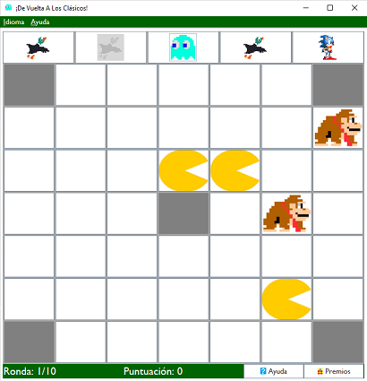
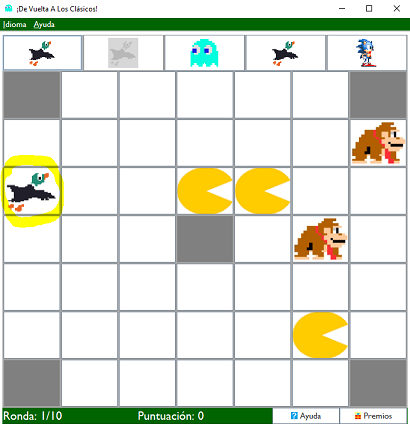

Para colocar invasores, el usuario deberá seleccionar un invasor haciendo clic en una casilla de la hilera a su antojo, la cual una vez que se haya seleccionado, se deshabilitará.
Para colocarlo, el usuario solamente tendrá que hacer clic en una de las casillas del tablero que no esté ocupada. Dicha casilla tampoco puede ser inaccesible.
Una vez que el usuario haya colocado dicho invasor, podrá proceder a seleccionar otro, y cuando se hayan colocado todos y cada uno de los invasores de la hilera, la misma se rellenará con cinco nuevos invasores aleatorios y se incrementará el número de ronda.